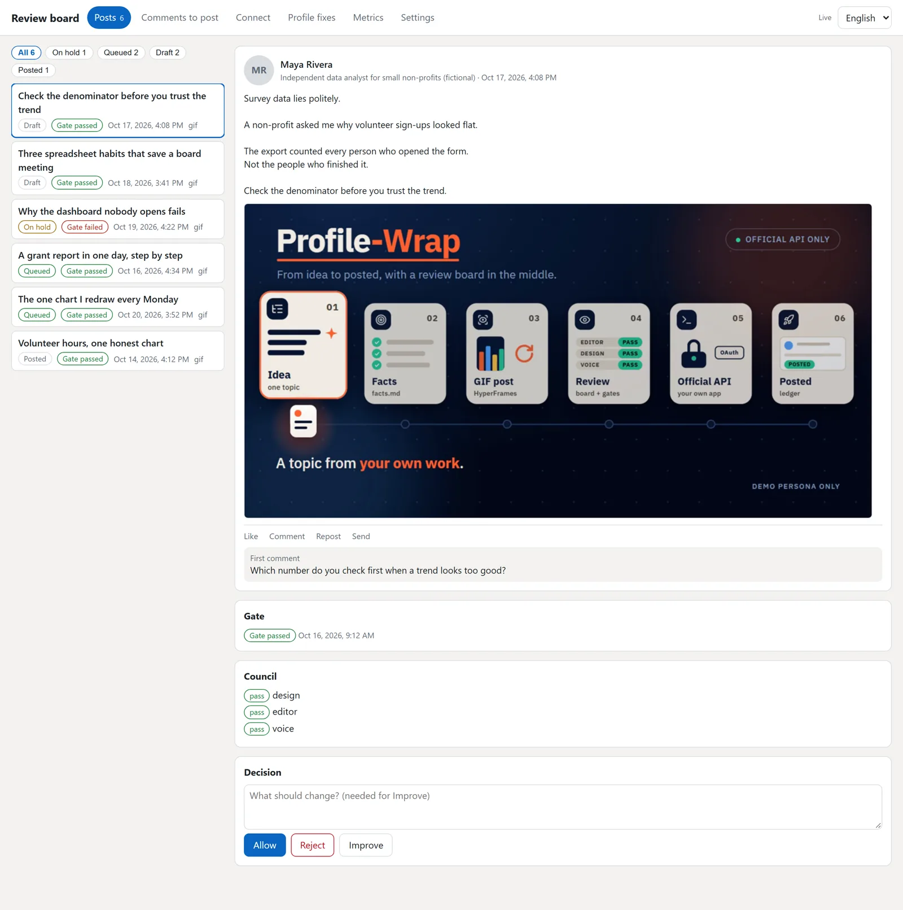

الإضافة
لـ Claude Code وCodex.
خطوات التثبيتلينكدإن الخاص بك يعمل تلقائيا، وأنت صاحب القرار.
Profile-Wrap مدير منشورات لينكدإن مجاني ومفتوح المصدر. يخطط منشورات أسبوعك، ويكتبها بأسلوبك، ويفحص كل منشور. لا يُنشر شيء حتى تضغط Allow (موافقة).
إضافة أو مهارات أو خادم MCP أو تطبيق سطح المكتب. كلها مجانية.
يخطط الأسبوع ويكتب كل منشور بأسلوبك.
لا يخرج شيء دون موافقتك.
لوحتك تعرض كل منشور أولا، وأنت تقرر.

كم تكلف البداية، من صفحة الأسعار الرسمية لكل أداة.
| الأداة | التكلفة للبدء | خيار مجاني |
|---|---|---|
| Profile-Wrap | $0 | مجاني ومفتوح المصدر (MIT) |
| Buffer | من $5 شهريا | خطة مجانية |
| AuthoredUp | $16.63 شهريا، تُدفع سنويا | تجربة مجانية |
| Taplio | $39 شهريا | تجربة مجانية |
| Postiz | مجاني عند الاستضافة بنفسك | مفتوح المصدر (AGPL-3.0) |
ما يميز Profile-Wrap: يعمل على حاسوبك أو داخل تطبيق الذكاء الاصطناعي الذي تستخدمه (Claude Code أو Codex أو أي تطبيق يدعم MCP)، وكل منشور ينتظر على لوحتك حتى تضغط موافقة.
كلها مجانية.
لـ Claude Code وCodex.
خطوات التثبيتلأي وكيل ذكاء اصطناعي يقرأ المهارات.
احصل على المهاراتلأي تطبيق يدعم MCP.
أعدّهلا تملك تطبيق ذكاء اصطناعي؟ هذا لك. ويندوز وماك ولينكس.
حمّل التطبيقProfile-Wrap مدير منشورات لينكدإن مجاني ومفتوح المصدر. يخطط منشورات أسبوعك، ويكتبها بأسلوبك، ويفحص كل منشور. أنت تضغط موافقة (Allow) على المنشورات التي تعجبك فقط. هو برنامج للينكدإن، ولا علاقة له بالآلات أو المنتجات الأخرى التي تحمل اسما مشابها.
نعم. Profile-Wrap مجاني ومفتوح المصدر بترخيص MIT. يخطط منشوراتك على لينكدإن وينشر كل منشور في وقت مناسب، وذلك بعد أن تضغط موافقة فقط.
Profile-Wrap لا يكلف شيئا وشيفرته مفتوحة. يعمل على حاسوبك أو داخل تطبيق الذكاء الاصطناعي الذي تستخدمه، والكتابة تتم بحساب الذكاء الاصطناعي الخاص بك. في 24 أكتوبر 2026 كانت خطط Buffer المدفوعة تبدأ من 5 دولارات شهريا، وخطط Taplio من 39 دولارا شهريا.
نادر الزغول، مهندس أتمتة اختبارات جودة البرمجيات. الشيفرة على GitHub بترخيص MIT.
نعم، التطبيق مجاني. الكتابة تتم بحساب الذكاء الاصطناعي الخاص بك (ChatGPT أو Claude أو Gemini أو نموذج محلي مجاني).
يستخدم واجهة لينكدإن الرسمية (API) عبر تطبيق مطوّر مجاني خاص بك. لا يطلب كلمة مرورك ولا يقرأ رسائلك الخاصة، ولا يُنشر شيء إلا إذا ضغطت موافقة.
لا. كل منشور ينتظر على لوحتك حتى تضغط موافقة. اضغط رفض أو اطلب نسخة أفضل ولن يُنشر شيء.
لا. ثبّت التطبيق، واطلب منشورات أسبوعك، ثم اضغط موافقة.
إن كنت تستخدم Claude Code أو Codex فاختر الإضافة. إن كنت تستخدم تطبيق ذكاء اصطناعي آخر فاختر خادم MCP. وإن لم يكن لديك شيء من ذلك فاختر تطبيق سطح المكتب.
نعم، على الثلاثة.
نعم. العربية والإنجليزية جنبا إلى جنب.
لا. هو مشروع مستقل، وليس تابعا للينكدإن ولا معتمدا منها.
قارن الملف مع ملف SHA256SUMS في صفحة الإصدار، أو استخدم الأمر gh attestation verify <file> --repo NJ-Burrito/Profile-Wrap.
Profile-Wrap مجاني بترخيص MIT.